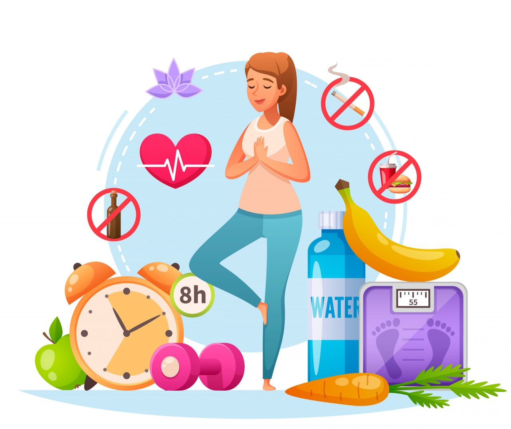

GOAL-FIT-CHECK
GOAL OF THIS SITE
THE 4 RULES TO BE FIT
HEALTH

- Balanced Diet: Opt for a variety of fruits, vegetables, whole grains, lean proteins, and healthy fats. A nutritious diet fuels your body and mind for optimal performance.
- Stay Hydrated: Drink enough water throughout the day to maintain hydration, which is essential for your body's functions and energy levels.
- Adequate Sleep: Aim for 7-8 hours of quality sleep each night to allow your body to rest, repair, and rejuvenate.
- Routine Check-ups: Regular health screenings help detect potential issues early, ensuring timely intervention and maintaining long-term health.
- Mental Health: Incorporate relaxation techniques such as meditation and deep breathing exercises to reduce stress and improve mental clarity.
- Avoid Harmful Substances: Limit alcohol consumption and avoid smoking to protect your overall health and longevity.
- Stress Management: Develop healthy coping strategies like journaling, engaging in hobbies, and seeking support from friends and professionals.
- Time Management: Prioritize tasks, set realistic goals, and create a balanced schedule to reduce overwhelm and improve productivity.
- Disconnect from Technology: Schedule regular breaks from screens to focus on personal activities and reduce digital fatigue.
TAKING IT EASY

- Set Realistic Goals: Avoid overcommitting by setting achievable goals and breaking larger tasks into manageable steps.
- Boundaries: Learn to say no and establish boundaries to protect your time and energy, preventing burnout.
- Downtime: Schedule regular breaks and leisure activities to recharge and relax.
- Engage in Hobbies: Participate in activities that bring you joy and help you unwind from daily stressors.
- Mindfulness: Practice mindfulness to stay present and reduce anxiety by focusing on the here and now.
- Relaxation Techniques: Use relaxation methods like guided imagery and deep breathing to release physical and mental tension.
- Seek Support: Reach out to friends, family, or professionals for emotional support and guidance.
- Delegate Tasks: Share responsibilities with others to lighten your load and create more time for self-care.
- Practice Gratitude: Reflect on what you're thankful for each day to maintain a positive outlook and build resilience.
- Disconnect Regularly: Establish periods to disconnect from work and technology, allowing time for personal reflection and relaxation.
MENTAL FORTITUDE
- Mental Health Awareness: Prioritize your mental well-being by recognizing and addressing mental health issues.
- Stress Management Techniques: Use techniques like mindfulness and cognitive-behavioral strategies to manage stress effectively.
- Build Resilience: Develop coping mechanisms to navigate challenging situations and build emotional strength.
- Healthy Habits: Maintain healthy routines, including regular exercise, balanced diet, and adequate sleep, to support mental clarity.
- Journaling: Write down your thoughts and feelings to process experiences and gain clarity.
- Mindfulness Meditation: Practice meditation to stay present and manage daily stressors.
- Therapy and Counseling: Seek professional help when needed to explore underlying issues and develop effective coping strategies.
- Positive Thinking: Focus on positive aspects of life to shift your perspective and reduce stress.
- Active Listening: Engage fully in conversations to build trust and strengthen relationships.
- Support Groups: Join groups to connect with others facing similar challenges and gain support.
POSITIVE CONNECTIVITY
- Nurture Relationships: Invest time in maintaining and strengthening relationships with family, friends, and colleagues.
- Community Involvement: Participate in local clubs, organizations, or volunteer activities to build connections and a sense of community.
- Support Networks: Create a network of trusted individuals who provide guidance and emotional support.
- Quality Time: Dedicate time for social interactions and plan activities with loved ones to foster deeper connections.
- Empathy and Compassion: Practice empathy by understanding others' perspectives and showing compassion.
- Active Listening: Show genuine interest and give full attention during conversations to build trust and connection.
- Positive Interactions: Foster positive interactions by expressing gratitude and appreciation towards others.
- Virtual Connections: Utilize technology to stay connected with distant friends and family.
- Shared Activities: Participate in shared activities that promote bonding and create lasting memories.
- Respect Boundaries: Respect others' boundaries and communicate your own to maintain healthy relationships.